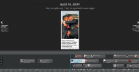
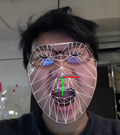

My final system are all here(in progress) http://samjingzhao.tumblr.com/
Resolution
http://itp.nyu.edu/~jz1149/st/

I was inspired by the Jean Baudrillard's theory of Simulacra and Simulation, that shows there are differences between reality and symbols,signs.
This week,I took China Daily,a famous and typical newspaper as an example to explore how social media born in 2009 have broken LGBT stereotypes in China.I focused on LGBT images in their related reports.
1. How the mass media built a stereotype based on their attitude and how it concealed and misrepresented the reality in the past?
2. What's more interesting was some LGBT organizations catered to media's taste and created stereotypes that masked the absence of a profound reality, the diversity LBTQ community. And the simulacrum has no relationship to the reality to some extent.
3. These stereotypes also have impacted the LGBT community, some LGBT person thought that stereotypes were the right model. For example, most gay images were very young and fit.
4. But after China social media weibo and others was born around 2009, there have been more personal and diversity images posted online, some other images were published, eg, old gay and lesbian's images, and they have changed the old LGBT stereotypes in China Daily.
I collected the LGBT images from China Daily website from 2003 till now and built a timeline to explore this issue. \\
{kind=link}
Data

Big data is seen as the “next big thing”. Based on the big data and overload information flow, there is a tendency of personalization research by algorithm.
So I am interested with 2 things.
1. The personalization research by algorithm
Internet moves us very quickly toward a world in which the Internet is showing us what it thinks we want to see, but not necessarily what we need to see. As Eric Schmidt said, “It will be very hard for people to watch or consume something that has not in some sense been tailored for them.”
But amid of all this hoopla, it may be easy to forget the fundamental rule – creating that emotional connection with users. Besides personalization research, it may be another way for connection and recommending related information, it is used by detecting user's face and analysis emotion behind face.
it reads facial expressions to measure the emotional connection people have with content.
it also could promote diversity of internet world.
If I feel happy, computer could provide more related information, if I feel serious, computer could provide more inversely information and open my mind.
It is humanized data. \\
{kind=link}
2. Technologies for the exploration of identities
Also in this way, I am caring for Technologies for the exploration of identities.Technologies for the articulation and performance of identities.
What technologies could ensure more flexible, fluid identities? How will humanized data impact gay identity and public's opinion of gay?
I wrote processing for detecting emotions, if user smile after watching lesbian couple pic,

it will give user the related pic,

if not, it will give user a sad pic.
{kind=link}